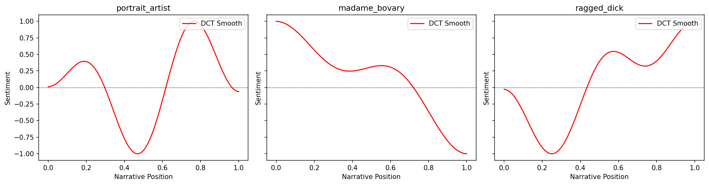
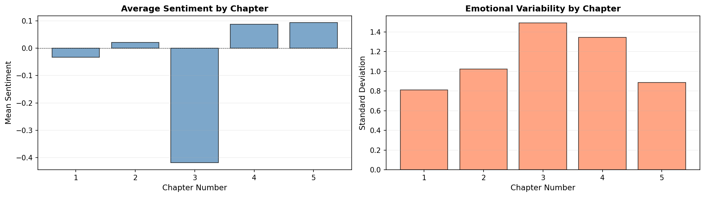
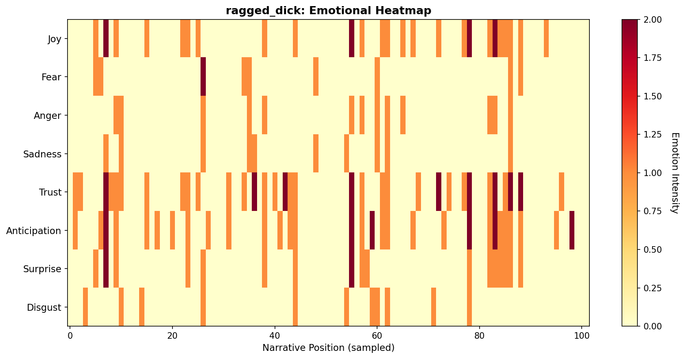
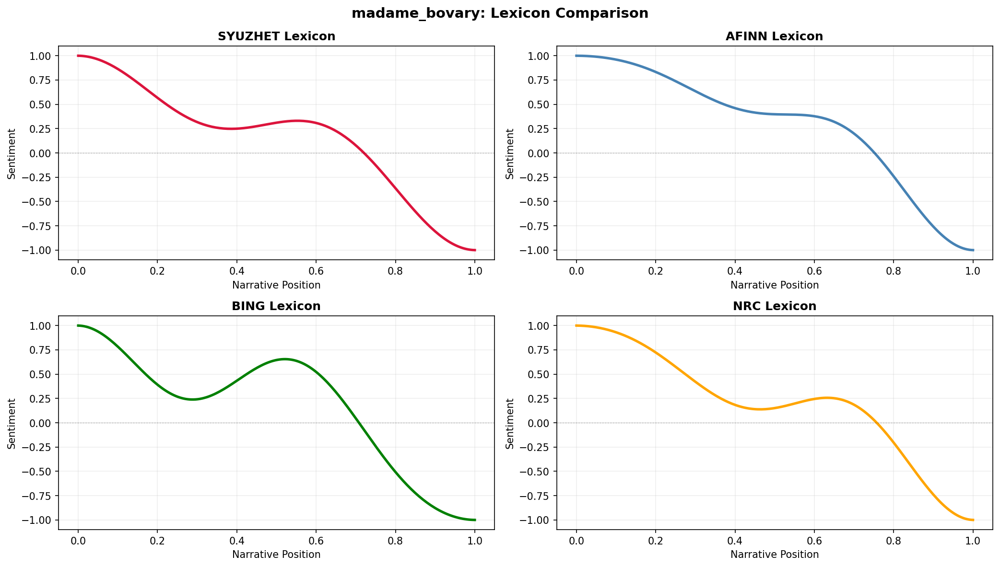
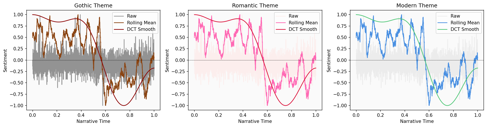
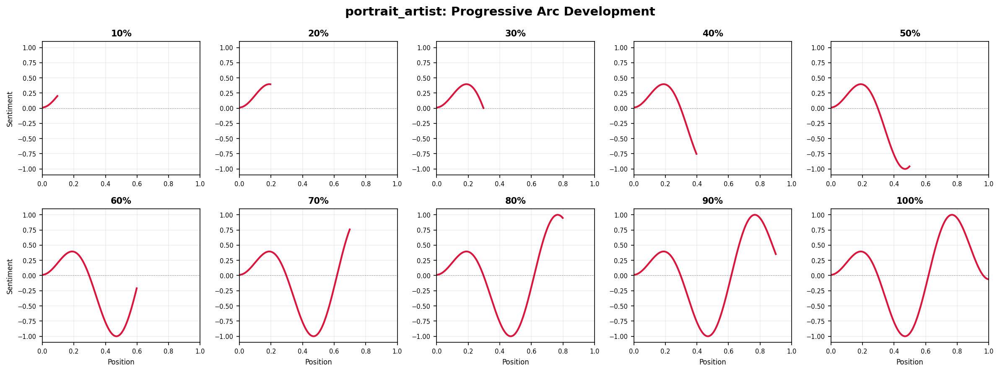

from moodswing import (
DictionarySentimentAnalyzer,
Sentencizer,
DCTTransform,
prepare_trajectory,
plot_trajectory,
trajectory_to_dataframe,
)
from moodswing.data import load_sample_text
import matplotlib.pyplot as plt
import numpy as np
import pandas as pdExamples Gallery
This gallery showcases complete workflows for common sentiment analysis tasks. Each example is self-contained and ready to adapt for your own projects.
Setup
Example 1: Comparing multiple novels
Analyze and compare the emotional arcs of several novels side-by-side:
# Setup
sentencizer = Sentencizer()
analyzer = DictionarySentimentAnalyzer()
# Select novels to compare
novels = [
"portrait_artist",
"madame_bovary",
"ragged_dick"
]
# Create subplots
fig, axes = plt.subplots(1, 3, figsize=(15, 4), dpi=150, sharey=True)
for ax, novel_id in zip(axes, novels):
try:
# Load and process
doc_id, text = load_sample_text(novel_id)
sentences = sentencizer.split(text)
scores = analyzer.sentence_scores(sentences, method="syuzhet")
# Create trajectory
trajectory = prepare_trajectory(
scores,
rolling_window=int(len(scores) * 0.05),
dct_transform=DCTTransform(low_pass_size=5, output_length=200, scale_range=True)
)
# Plot only DCT
plot_trajectory(trajectory, components=['dct'], title=doc_id, ax=ax)
ax.set_xlabel('Narrative Position')
if ax == axes[0]:
ax.set_ylabel('Sentiment')
except Exception as e:
print(f"Could not process {novel_id}: {e}")
plt.tight_layout()
plt.show()
Example 2: Chapter-by-chapter analysis
Analyze a novel broken into chapters to see emotional patterns at the chapter level:
# Load a novel
doc_id, text = load_sample_text("portrait_artist")
# Split into chapters (using Chapter markers as delimiters)
import re
chapters = re.split(r'\s*Chapter\s+[IVXLC]+\s*', text)
chapters = [ch.strip() for ch in chapters if ch.strip()]
print(f"Found {len(chapters)} chapters in {doc_id}")
# Score each chapter
chapter_scores = []
for i, chapter in enumerate(chapters, 1):
sents = sentencizer.split(chapter)
scores = analyzer.sentence_scores(sents, method="syuzhet")
avg_score = np.mean(scores) if scores else 0
chapter_scores.append({
'chapter': i,
'mean_sentiment': avg_score,
'sentences': len(sents),
'std_sentiment': np.std(scores) if scores else 0
})
# Create DataFrame
chapters_df = pd.DataFrame(chapter_scores)
print(chapters_df.head())Found 5 chapters in portrait_artist
chapter mean_sentiment sentences std_sentiment
0 1 -0.033272 1366 0.812152
1 2 0.021910 801 1.024633
2 3 -0.419166 887 1.490579
3 4 0.087970 399 1.343594
4 5 0.093825 1919 0.887800fig, (ax1, ax2) = plt.subplots(1, 2, figsize=(14, 4), dpi=150)
# Plot 1: Mean sentiment by chapter
ax1.bar(chapters_df['chapter'], chapters_df['mean_sentiment'],
color='steelblue', alpha=0.7, edgecolor='black')
ax1.axhline(0, color='black', linewidth=0.5, linestyle='--')
ax1.set_xlabel('Chapter Number', fontsize=11)
ax1.set_ylabel('Mean Sentiment', fontsize=11)
ax1.set_title('Average Sentiment by Chapter', fontsize=12, fontweight='bold')
ax1.grid(True, alpha=0.2, axis='y')
# Plot 2: Sentiment variability
ax2.bar(chapters_df['chapter'], chapters_df['std_sentiment'],
color='coral', alpha=0.7, edgecolor='black')
ax2.set_xlabel('Chapter Number', fontsize=11)
ax2.set_ylabel('Standard Deviation', fontsize=11)
ax2.set_title('Emotional Variability by Chapter', fontsize=12, fontweight='bold')
ax2.grid(True, alpha=0.2, axis='y')
plt.tight_layout()
plt.show()
Example 3: Multi-dimensional emotion tracking
Track and visualize multiple NRC emotions simultaneously:
# Load and analyze
doc_id, text = load_sample_text("ragged_dick")
sentences = sentencizer.split(text)
# Get NRC emotions
emotions = analyzer.nrc_emotions(sentences)
emotions_df = pd.DataFrame(emotions)
# Sample every Nth sentence for cleaner visualization
sample_rate = max(1, len(emotions_df) // 100) # ~100 points
emotions_sampled = emotions_df.iloc[::sample_rate]
# Select key emotions for heatmap
emotion_cols = ['joy', 'fear', 'anger', 'sadness', 'trust', 'anticipation', 'surprise', 'disgust']
# Create heatmap
fig, ax = plt.subplots(figsize=(12, 6), dpi=150)
im = ax.imshow(emotions_sampled[emotion_cols].T, aspect='auto', cmap='YlOrRd', interpolation='nearest')
# Customize
ax.set_yticks(range(len(emotion_cols)))
ax.set_yticklabels([e.title() for e in emotion_cols], fontsize=11)
ax.set_xlabel('Narrative Position (sampled)', fontsize=11)
ax.set_title(f'{doc_id}: Emotional Heatmap', fontsize=13, fontweight='bold')
# Add colorbar
cbar = plt.colorbar(im, ax=ax)
cbar.set_label('Emotion Intensity', rotation=270, labelpad=20, fontsize=11)
plt.tight_layout()
plt.show()
Example 4: Comparing sentiment methods
Compare how different lexicons score the same text:
doc_id, text = load_sample_text("madame_bovary")
sentences = sentencizer.split(text)
# Score with all four lexicons
methods = ['syuzhet', 'afinn', 'bing', 'nrc']
trajectories = {}
for method in methods:
scores = analyzer.sentence_scores(sentences, method=method)
traj = prepare_trajectory(
scores,
dct_transform=DCTTransform(low_pass_size=5, output_length=200, scale_range=True)
)
trajectories[method] = traj
# Plot comparison
fig, axes = plt.subplots(2, 2, figsize=(14, 8), dpi=150)
axes = axes.flatten()
colors = ['crimson', 'steelblue', 'green', 'orange']
for ax, method, color in zip(axes, methods, colors):
traj = trajectories[method]
x = np.linspace(0, 1, len(traj.dct))
ax.plot(x, traj.dct, color=color, linewidth=2.5, label=method.upper())
ax.axhline(0, color='black', linewidth=0.5, linestyle='--', alpha=0.3)
ax.set_title(f'{method.upper()} Lexicon', fontsize=12, fontweight='bold')
ax.set_xlabel('Narrative Position', fontsize=10)
ax.set_ylabel('Sentiment', fontsize=10)
ax.grid(True, alpha=0.2)
ax.set_ylim(-1.1, 1.1)
fig.suptitle(f'{doc_id}: Lexicon Comparison', fontsize=14, fontweight='bold')
plt.tight_layout()
plt.show()
Example 5: Custom color schemes for themes
Create thematic color palettes for different genres or moods:
# Define color themes
themes = {
'gothic': {'raw': '#2D2D2D', 'rolling': '#8B4513', 'dct': '#8B0000'},
'romantic': {'raw': '#FFE4E1', 'rolling': '#FF69B4', 'dct': '#DC143C'},
'modern': {'raw': '#E0E0E0', 'rolling': '#4A90E2', 'dct': '#50C878'},
}
# Load text
doc_id, text = load_sample_text("silas_lapham")
sentences = sentencizer.split(text)
scores = analyzer.sentence_scores(sentences, method="syuzhet")
trajectory = prepare_trajectory(
scores,
rolling_window=int(len(scores) * 0.05),
dct_transform=DCTTransform(low_pass_size=5, output_length=200, scale_range=True)
)
# Plot with each theme
fig, axes = plt.subplots(1, 3, figsize=(15, 4), dpi=150)
for ax, (theme_name, colors) in zip(axes, themes.items()):
plot_trajectory(trajectory, colors=colors, title=f'{theme_name.title()} Theme', ax=ax)
ax.set_facecolor('#FAFAFA')
plt.tight_layout()
plt.show()
Example 6: Export data for external tools
Prepare sentiment data for analysis in R, Excel, or other tools:
# Full analysis pipeline with data export
doc_id, text = load_sample_text("madame_bovary")
sentences = sentencizer.split(text)
# Get multiple types of scores
syuzhet_scores = analyzer.sentence_scores(sentences, method="syuzhet")
emotions = analyzer.nrc_emotions(sentences)
# Create comprehensive DataFrame
analysis_df = pd.DataFrame({
'sentence_num': range(1, len(sentences) + 1),
'sentence_text': sentences,
'syuzhet_score': syuzhet_scores,
})
# Add NRC emotions
emotions_df = pd.DataFrame(emotions)
analysis_df = pd.concat([analysis_df, emotions_df], axis=1)
# Add trajectory data (aligned to sentence positions)
trajectory = prepare_trajectory(
syuzhet_scores,
rolling_window=int(len(syuzhet_scores) * 0.05),
dct_transform=DCTTransform(low_pass_size=5, output_length=len(sentences), scale_range=True)
)
analysis_df['raw_normalized'] = trajectory.raw
analysis_df['rolling_smooth'] = trajectory.rolling[:len(sentences)]
analysis_df['dct_smooth'] = trajectory.dct[:len(sentences)]
# Display sample
print(analysis_df.head()) sentence_num sentence_text \
0 1 Part I Chapter One We were in class when the h...
1 2 Those who had been asleep woke up, and every o...
2 3 The head-master made a sign to us to sit down.
3 4 Then, turning to the class-master, he said to ...
4 5 If his work and conduct are satisfactory, he w...
syuzhet_score anger anticipation disgust fear joy negative positive \
0 1.20 0.0 0.0 0.0 0.0 0.0 1.0 1.0
1 0.25 0.0 0.0 0.0 0.0 0.0 0.0 0.0
2 0.00 0.0 0.0 0.0 0.0 0.0 0.0 0.0
3 1.50 0.0 0.0 0.0 0.0 0.0 0.0 1.0
4 1.05 0.0 0.0 0.0 0.0 0.0 0.0 0.0
sadness surprise trust raw_normalized rolling_smooth dct_smooth
0 0.0 0.0 4.0 -0.068702 0.481874 1.000000
1 0.0 1.0 0.0 -0.213740 0.449076 0.999999
2 0.0 0.0 0.0 -0.251908 0.462119 0.999998
3 0.0 0.0 1.0 -0.022901 0.463712 0.999996
4 0.0 0.0 0.0 -0.091603 0.459667 0.999994 # Export
analysis_df.to_csv(f'{doc_id}_full_analysis.csv', index=False)
analysis_df.to_excel(f'{doc_id}_full_analysis.xlsx', index=False)
print(f"\\nExported {len(analysis_df)} sentences with {len(analysis_df.columns)} features")
print("Files created: CSV and Excel formats")Example 8: Progressive trajectory reveal
Visualize how a narrative arc unfolds over time using a grid of progressive snapshots:
# Create progressive reveal visualization
doc_id, text = load_sample_text("portrait_artist")
sentences = sentencizer.split(text)
scores = analyzer.sentence_scores(sentences, method="syuzhet")
# Create full trajectory
full_trajectory = prepare_trajectory(
scores,
dct_transform=DCTTransform(low_pass_size=5, output_length=200, scale_range=True)
)
positions = np.linspace(0, 1, len(full_trajectory.dct))
# Create grid of 10 frames (2 rows x 5 columns)
fig, axes = plt.subplots(2, 5, figsize=(16, 6), dpi=150)
axes = axes.flatten()
n_frames = 10
for frame_num, ax in enumerate(axes, 1):
# Show first N% of trajectory
cutoff = int(len(positions) * (frame_num / n_frames))
# Plot progressive portion
ax.plot(positions[:cutoff], full_trajectory.dct[:cutoff],
color='crimson', linewidth=2)
ax.axhline(0, color='black', linewidth=0.5, linestyle='--', alpha=0.3)
ax.set_xlim(0, 1)
ax.set_ylim(-1.1, 1.1)
# Minimize labels for grid view
ax.set_title(f'{frame_num*10}%', fontsize=10, fontweight='bold')
ax.tick_params(labelsize=7)
ax.grid(True, alpha=0.2)
# Only show axis labels on outer edges
if frame_num > 5:
ax.set_xlabel('Position', fontsize=8)
if frame_num in [1, 6]:
ax.set_ylabel('Sentiment', fontsize=8)
fig.suptitle(f'{doc_id}: Progressive Arc Development', fontsize=14, fontweight='bold')
plt.tight_layout()
plt.show()
This “storyboard” view shows how the emotional trajectory emerges gradually—useful for presentations or for understanding when key narrative shifts occur.
Next steps
- Adapt these examples for your own texts
- Combine techniques for richer analysis
- See Visualization Guide for more styling options
- Read Technical Notes for implementation details